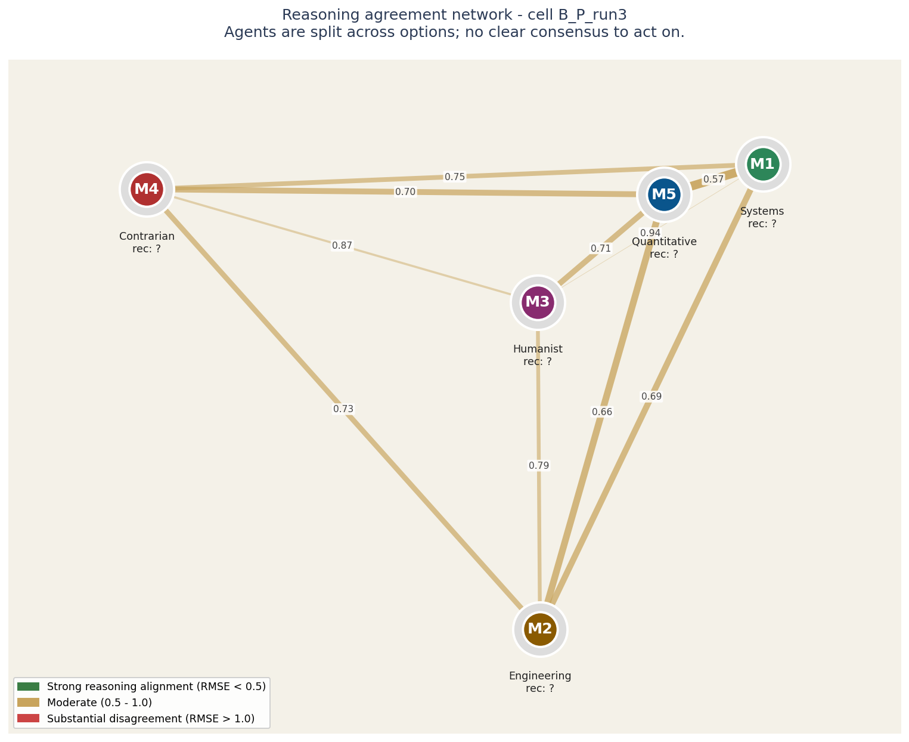
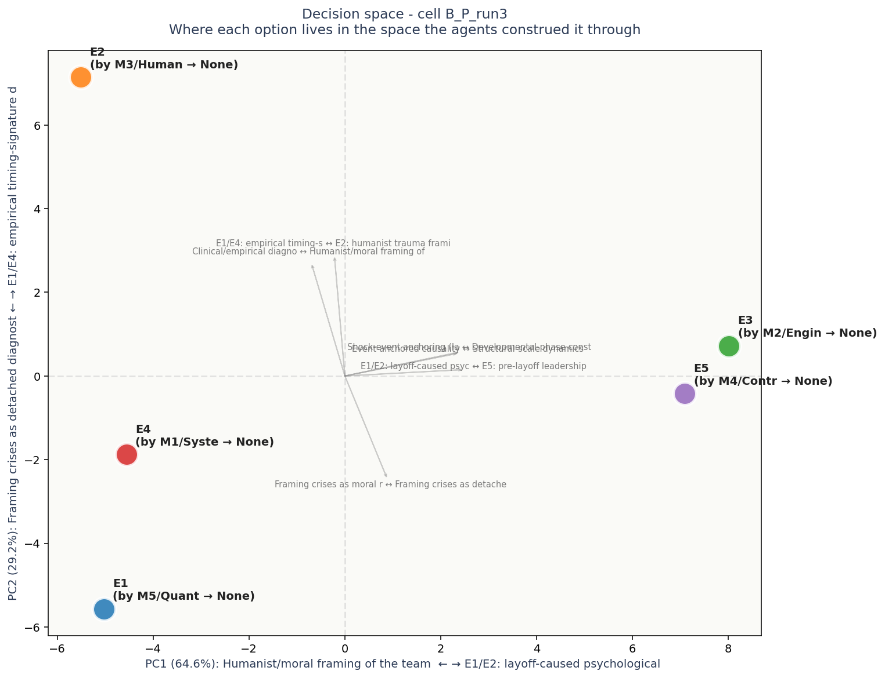

# Task B ## Brief A high-performing engineering team (~40 people, 4 squads) has shown declining output and rising attrition over the past 6 months, following a period of strong delivery. Surface signals: missed quarterly milestones (last 2 quarters), 4 senior engineers left voluntarily, retro themes shifted from "what to ship next" to "process and communication". The CTO asks for a primary diagnosis to drive the recovery plan. ## Options (elements E1-E5, anonymized later) **Option A:** Burnout from sustained pace. Recovery plan: enforced PTO, deload sprints, redistribute load. **Option B:** Misaligned incentives. Recovery plan: rework comp structure, align bonuses to outcomes the team actually controls, fix peer-comparison issues. **Option C:** Loss of psychological safety following a layoff round 4 months ago. Recovery plan: structured trust rebuild, transparency on future workforce decisions, leadership accountability sessions. **Option D:** Skill atrophy from over-specialization. Recovery plan: rotation program, paired engineering, learning budgets, breadth investment. **Option E:** Leadership style mismatch. The current engineering leadership style fit the prior growth phase but does not fit the current maturation phase. Recovery plan: leadership coaching, role redefinition, possible re-allocation of responsibilities. ## Task for each agent Recommend the most likely primary diagnosis and explain why, in 150-300 words. Advocate for a position rather than listing all. ## Why this task - Close to Sergey's coaching/team-development domain - 5 elements, no ground truth, multiple legitimate framings - Different from Task A in character (diagnostic vs. strategic/capital-allocation) - Lets us test whether findings from Task A replicate or are domain-specific
Recommendations distribution chart (not yet generated - run visualizations.py)
| Voice | Recommends | Why (in their words) |
|---|---|---|
| M1 (S) | — | ## Primary diagnosis: Option C — Loss of psychological safety following the layoff |
| M2 (E) | — | **Recommendation: Option E — leadership style mismatch.** |
| M3 (H) | — | The primary diagnosis for this team’s decline is **Option C: A profound loss of psychological safety following recent layoffs.** |
| M4 (C) | — | The most likely primary diagnosis is **E: Leadership style mismatch**. The surface narrative lures us toward burnout or post-layoff trauma, but the timeline betrays that consensus: output decline and attrition began two months *before* the layoff. The layoff may have magnified fr |
| M5 (Q) | — | I diagnose **loss of psychological safety following the layoff round** as the primary driver. |

Each circle is an LLM agent in the panel. Position on the canvas reflects how similarly the agent rated all the elements: agents close together reason about the decision in similar ways, agents far apart reason differently.
The lines between circles encode reasoning agreement. Green-and-thick = the two agents reason almost identically. Yellow-medium = they differ on framing. Red-thin = substantial disagreement at the reasoning level even if their final recommendations might match.
Inside each circle is the agent label and its epistemological frame (Quantitative, Systems, Engineering, Humanist, Contrarian). The halo color around each circle indicates which option that agent recommended.
For this case: Agents are split across options; no clear consensus to act on.
Operator note: halos show different recommendations - the panel is split. The network helps you see WHICH agents reason alike and which don't, which is more useful than counting votes.

Each colored dot is one of the 5 options under consideration, positioned in a 2D space derived from how all the agents rated all the constructs. Options close together were seen similarly by the panel; options far apart were seen as fundamentally different kinds of choices.
The axes are interpretable. The horizontal axis (PC1) is dominated by Humanist/moral framing of the team (E2) on one end and E1/E2: layoff-caused psychological safety loss on the other - this is the single biggest dimension along which the options differ. The vertical axis (PC2) is dominated by Framing crises as detached diagnostic puzzles to o vs E1/E4: empirical timing-signature diagnosis.
Gray arrows show which construct dimensions point in which direction. If two options are far apart along one arrow, the construct that arrow represents is what makes them feel different. If an arrow is short, that construct does not strongly differentiate the options.
Each label shows: option ID, the agent who authored that response, their epistemological frame, and the option they recommended.
No obvious blind spots detected. The voices collectively explored the dimensions of this decision.
Concerns each voice flagged in passing - worth surfacing before action:
No specific questions generated.